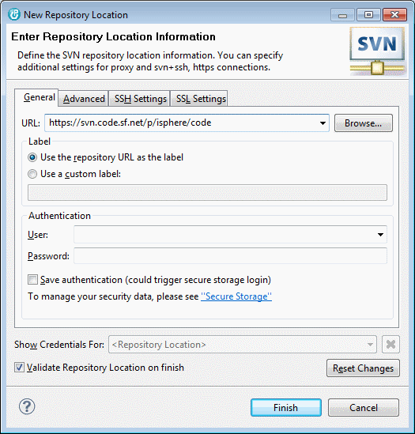
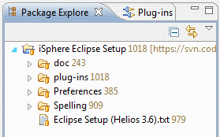

Open the "SVN Repository Exploring" perspective and click the "New Repository Location" icon on the "SVN Repositories" view.
Now enter the URL of the location of the iSphere repository at SourceForge:

Click the "Finish" button. Now should see the iSphere repository like this:
| WDSCi: You need to install the Subclipse SVN Team provider. You can download it from the iSphere repository at SourceForge. |
Let us go ahead and check out the "iSphere Eclipse Setup". Open the "SVN repository Exploring" view, right click the "iSphere Eclipse Setup" project and select "Checkout". The checkout process will start immediately and checkout the project to your workspace.

Next we want to install the "iSphere Ant Plugin", which provides some Ant tasks that we need to build the plug-in. Open "Help -> Install New Software..." and click the "Add" button. Enter a descriptive name, such as iSphere Ant Plugin and the location of the "iSphere Ant Contribution" zip file that you can find in directory "plug-ins" of the "iSphere Eclipse Setup" project.
Now we need to set the Java JRE that we need to compile the iSphere plug-in. Since we want to be compatible with WDSCi 7.0, we use that JRE to compile the classes.
Open "Windows -> Preferences -> Java -> Installed JREs". Click the "Add" button, select "Standard VM" and click "Next". Now select the WDSCi 7.0 JRE and give it the name "JRE 1.5.0 IBM J9". Please enter the same as shown. Do not change it. Usually the JRE is located in the jdk directory of the WDSCi SDP folder, e.g.:
The clean up profile is used to add missing source code or to remove unnessary code to/from a Java source file. It can be applied to a source file automatically, when the source file is saved. A shared clean up profile that is used by all developers is important, when the source code is stored in a repository, such as SVN. Then the clean up profile ensures, that there are, for example, no missing @override annotations or unnecessary type casts.
Import the clean up profile from file "Preferences_Java_CodeStyle_CleanUp (iSphere)_3.6.xml" of the "iSphere Eclipse Setup".
| WDSCi: Restore default values for all "Clean Up" tabs. Uncheck "Change all accesses through subtypes" on "Member Accesses" tab. |
The code formatter profile defines the rules that are applied when a Java source file is formatted. Java source files can be formatted automatically, when the source file is saved. It is important that all developers use the same formatting rules, when the source code is stored in a repository, such as SVN, to avoid changes just because of different formatting styles.
Import the code formatter profile from file "Preferences_Java_CodeStyle_Formatter (iSphere)_3.6.xml" of the "iSphere Eclipse Setup".
The save actions are pretty useful if the is a need to automatically perform actions when a source file is saved. We use it to automatically clean up and format our Java source files. Please set your save actions as described below:
| Enabled: | Perform the selected actions on save | |
| Enabled: | Format source code | |
| Enabled: | Format all lines | |
| Enabled: | Organize imports | |
| Disabled: | Additional actions |